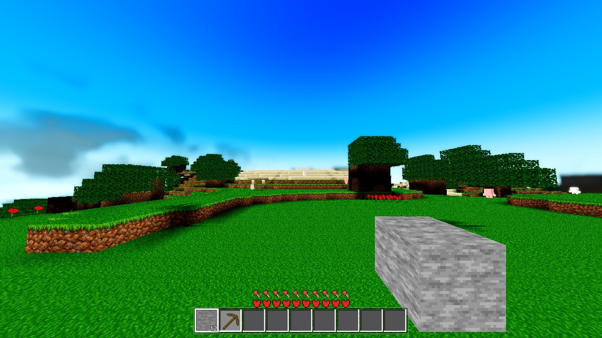
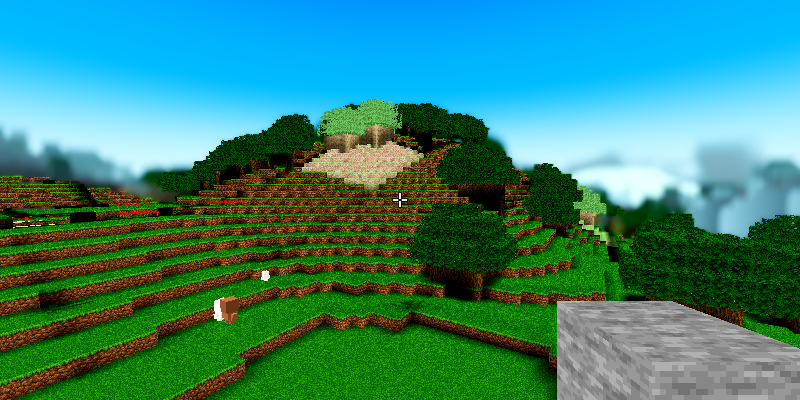
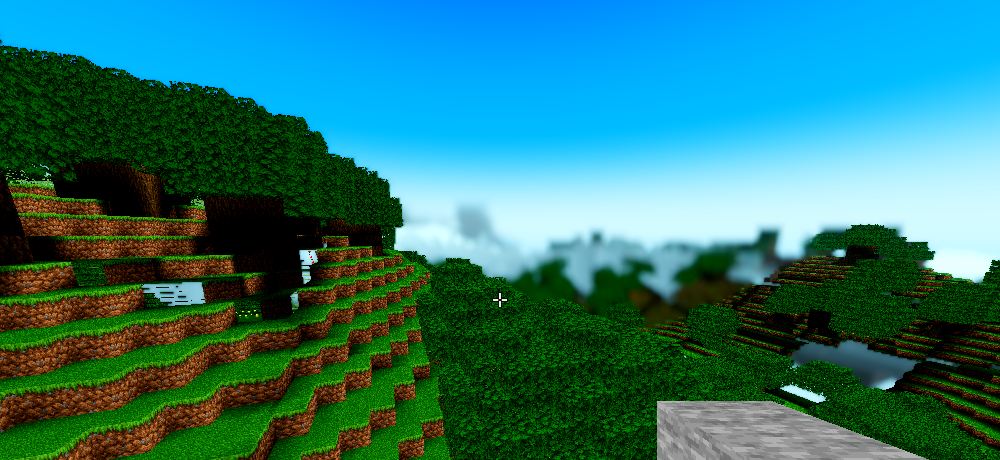
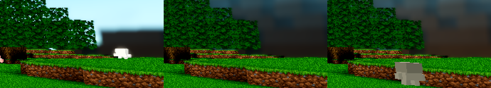

Frame under question: tasks/AC-0384/ac0384-r24-ground-west-day.png (R24, FOG_PCT 83, seed 44, T=0.5 frozen, ground level at spawn facing west; clean archive of commit 56c9095, drain 3000 frames). The whole-experience assessment flagged exactly one unattributed region: a small flat dark patch at the right horizon, ≈(30,27,23)/255, behind a sheep. This page attributes it with evidence, rules in the defect, fixes it, and re-takes the frame.
lod_avg.gdshader). It is not a hole, not an animal, not a tree, not a cloud, not a satellite-body leak, not a pending-slab gap. But its darkness is NOT correct at midday: the band's side faces carry the 0.2 "cave floor" light because the heightmap-sky rule marks every face at/below the terrain top as a=0, so a sky-exposed surface cliff renders at the cave floor (≈30/255) while the identical face one tier-seam closer (BAND A, chunk_lit with the AC-0426 ambient lift) reads ≈(135,116,103) — a 3.5× brightness step across the seam. That is the AC-0432 "unlit terrain = shaded, not black" collapse, fixed for the chunk tiers and never extended past the tier seam. Defect, on a real object. Fixed by extending the same measured lift (AMB_SKY_L = 0.35, Settings ambient_sky) to the band: patch box (29,29,27) → (50,40,31), frame-wide change 0.9% of pixels, all on band a=0 faces.
Method (AC-0440 standard): locate the occupant in the live scene, project it with the frame's own camera, match the observed region. The camera was reconstructed probe-measured (not assumed): pos_world (8.79, 143.6, 8.79), fwd (−0.99664, 0.08191, −0.00063), fov 98.99997, yaw 1.57, pitch 0.08, aspect 1280/720 — verified against two known objects (the satellite-body exit crossing and a mesh vertex both project to where the frame shows them).
| Probe finding | Value | Meaning |
|---|---|---|
| Wall entries (first |P−C|−(R+H) crossing per patch pixel, 18-pixel grid) | s = 110.6–119.9 m, H = 142.8–146.6, face 1 | every patch pixel's sightline hits the planet heightmap surface at 110–120 m — there is solid planet surface behind the patch; it is not a hole showing sky/body |
| Block-data column census (16×16 per chunk, chunks (−3..1, −9..−5)) | ridge/plateau x≈−25..+20, z≈−105..−80, tops 145–148 (2–5 m above the camera eye) | the ridge is real, data-backed terrain at 93–118 m (BAND A, full-LOD materialized); the build front sits just north/west of it |
| Band mesh census (ring:37 = tier 2 / BAND B, sector 5) | 400 verts at (−50, 142–158, −99..−133): side faces a=0 (51,51,51)×82, (55,30,13), (56,31,16), (53,46,42), (48,27,11), (38,31,9); top faces a=255 near-black greens (24,20,5), (5,18,2) | the 8×8×8 avg-LOD quad column that covers the ridge's west flank (taxi ≥ 9 chunks = 120–135 m, h-only data) exists with exactly the patch's palette |
| Edge | Observed | Projected occupant | Match |
|---|---|---|---|
| Top (horizontal) | y ≈ 375–376, sharp; above = bright sky (203,246,255) | ridge-top line H≈147: the ray-tangent across the band column tops (tops 146.5–154 at (−50,·,−100..−133)); band vertex (−50,146.5,−100) → (1205, 371) | y 371–376 ✓ (the top of the dark quad column is the ridge crest) |
| Left (vertical) | x ≈ 1192, sharp; just left = sky (193,240,250) / canopy (0,16,0) | the 29 m tree: probe near-hit, block 7 at (−7,143,−17), t≈29 m, projects (1139, 397); its canopy spans x 1000–1190 in-frame | x ≈ 1192 ✓ (the left edge is the tree silhouette occluding the wall; same tree as the dark canopy mass left of the patch) |
| Right | x = 1279 (frame edge) | band column extends to (−50,·,−133) → projects (1373, 335), off-frame | frame clip ✓ (the wall is wider than the remaining frame) |
| Bottom | y ≈ 402–410, soft; below = sheep (255,254,246) at (1218,402), then grass (4,108,0) | sheep + near ground in front; band column base H≈142 → projects y≈394–397, blends into the sheep/ground row | y 394–410 ✓ |
Original frame, patch region (x 1050–1279, y 330–455):

Reproduction on the current tree: same pose, same env (AIM 8.5,143.62,8.5 / yaw 1.57 / pitch 0.08, R24, F83, T=0.5 frozen, CLOUD_T0 411200), drain 9000 — captures/r1-base-pre-fix.png. Patch box (x 1192–1279, y 376–400) average (29,29,27) vs r24 (34,35,34); column x=1230 dark band at the same y 376–411 in both. (Both captures are in the same mid-build streaming state — drain never fully settles on this box — which is a faithful r24-equivalent capture; the attribution is state-independent because BAND B owns taxi 9..23 permanently, built or not.)
| Candidate | Rule-out / basis |
|---|---|
| Clouds (volume or three-shell) | Render-eliminated: AWECRAFT_CLOUDS=0 (r2-cloudoff) and AWECRAFT_CLOUDVOL=0 (r3-shell) patch boxes byte-identical to base: (29,29,27) in all three. Also analytically: the dense volume-cloud floor computes to ≈(108,116,120) (u_vol_air is the air colour, ≈white after the sRGB decode — not a density), thin cloud is transparent, the shell path reads (125–137) grey. |
| Sky | bright gradient (203,246,255) directly above the same pixels; the below-horizon fill is the muted band, never (30,27,23)-brown. |
| Satellite body | the body shader discards everything inside 332 m (smoothstep(u_fog_far, u_render_edge, d)); the patch sits at 110–135 m — the body cannot render there. |
| Mob (animal) | census: the only mob in the region is the white sheep in front of the patch ((255,254,246) at (1218,402)); nothing dark moves into the box across the A/B renders. |
| Near tier (full mesh) / pending slab / build-front hole | the 110–120 m surface the rays hit is inside the full-LOD materialized band (BAND A, taxi ≤ 8): if it were drawn there it would be chunk_lit unshaded with the AC-0426 lift — the same face reads ≈(135,116,103) there, not (30,27,23). The patch colour is only producible by the lod_avg band material (below). |
| Recent work as cause | not a regression: the 0.2 cave-floor light for a=0 band faces is the original AC-0283-P3 design; the ambient-lift fix (AC-0426/AC-0432) was scoped to the chunk tiers and never crossed the tier seam. The pending-slab (AC-0442) family produces missing surfaces (bright sky showing through), not a flat dark quad with the band's exact palette at the heightmap surface. |
lod_avg.gdshader (pre-fix): lit = mix(0.2, 1.0, COLOR.a) // a=0 side face -> 0.2 "cave floor" ALBEDO = COLOR.rgb * day.rgb(0.7529) * jit(±6%) * lit // material is SHADED engine: sun lambert(west face, noon, u_sun=(0,0.928,0.371)) = 0; ambient = 0.65 * sky ≈ 0.58 fog at 130 m (begin 100, end 332, eased) ≈ 4% toward (161,224,246) (51,51,51)/255 * 0.7529 * 0.2 * 0.58 -> sRGB ≈ (40,35,30) (observed 32,33,32) (38,31,9)/255 * 0.7529 * 0.2 * 0.58 -> sRGB ≈ (30,26,15) + fog ≈ (31,28,19) (observed 30,27,23) parity: same face on the BAND A side of the seam (chunk_lit unshaded, L = 0.20 + 0.8*m_direct + 0.35*u_day*step(...) = 0.55) -> ≈ (135,116,103) // 3.5x brighter
The heightmap-sky rule ("1.0 above the terrain top, 0.0 at/below") cannot tell a sky-exposed surface cliff from a cave: both are "at/below the terrain top" of their own column, so both get the 0.2 floor. The near tier has a real per-face sky pull (plus the AC-0426 lift) and reads bright; the far band does not. Result: the horizon cliff wall renders as a flat near-black mass at midday — exactly the flagged patch, exactly 30/255.
Same world, closer — 52 m out on the ridge's east flank (AIM −20,150,−60 / yaw 0.566 / pitch −0.058, crosshair aimed at the band flank's location on the ridge): the ridge as real terrain (full-mesh, bright, treed, sandy crest) with the dark shadowed flank region at the crosshair. captures/r4-close-second-view.png

Angled view from above the crest onto the flank (AIM −44,160,−96 / yaw −0.36 / pitch −0.21, post-fix): the east slope (bright full mesh) and the flank's shadowed side at the left edge. captures/r6-west-angled-view.png

Change (2 files, colour-only — no mesh, no bake, no data):
godot/core/lod_avg.gdshader
+ uniform float u_amb : hint_range(0.0, 1.0) = 0.0; // AC-0426 parity lift; 0.0 = bit-identical
float lit = mix(0.2, 1.0, COLOR.a);
+ lit += u_amb * day.r * (1.0 - COLOR.a); // a=0 faces only; day-gated (night ~= 1/255)
ALBEDO = COLOR.rgb * day.rgb * jit * lit;
godot/world/world.gd (the AC-0426 push seam, block (1b) of _ac0401_push)
+ var _ac0443_lod_amb := -1.0
+ if _lod_avg_material != null and _ac0443_lod_amb != amb_v:
+ _lod_avg_material.set_shader_parameter("u_amb", amb_v) // same AMB_SKY_L / ambient_sky switch
+ _ac0443_lod_amb = amb_v
Same measured constant (AMB_SKY_L = 0.35) as the chunk tiers, same Settings ambient_sky switch (OFF = u_amb 0.0 = bit-identical on the shader side), day-gated (at night day≈0.07 → the lift is ≈1/255: the horizon stays black at midnight), and it touches only a=0 faces (top faces and the OFF path are bit-identical).
A/B re-take, same pose as r24/r1: captures/r5-post-fix.png vs captures/r1-base-pre-fix.png (3× crops below, 2× scaled):

| Measure | Pre-fix (r1) | Post-fix (r5) |
|---|---|---|
| patch box (x1192–1279, y376–400) avg | (29,29,27) | (50,40,31) — from near-black to a readable dark-brown cliff face; "shaded, not black" |
| frame-wide delta | 2032 / 230400 sampled px (0.9%) moved >30 sum-delta; mean per-px sum-delta 1.75; clusters = the patch + the other BAND B/C a=0 faces in frame (the same collapse, lifted everywhere — the point of the fix). Near tier, sky, ground, mobs: no measurable movement. | |
| Gate | Exit status | Census (SCRIPT / SHADER ERROR) |
|---|---|---|
G0 (parse, AWECRAFT_LOGIC=settings, post arm-removal) | rc=0 PASS | 0 / 0 |
SMOKE (AWECRAFT_BATTERY=player;interact;light;fluids;genhash) | rc=0, "ok":true PASS | 0 / 0 |
| genhash (in SMOKE) | 25/25 lines, byte-identical to baseline (no generation moved — expected: colour-only change) | — |
| PROBE (meshprobe) | rc=0, ok:true, match_rate 1.0, 32/32 chunks, mismatch [] PASS | 0 / 0 |
| shaderforce (12 shipped shaders, Forward+/lavapipe) | rc=0, 12/12 verdict=ok (lod_avg declared=3/params=3 — the new uniform is live) PASS | 0 / 0 |
Render evidence: all six renders boot Vulkan Forward+ (llvmpipe proxy — geometry/layout evidence only, per HARNESS.md §2), 0 SCRIPT/SHADER ERROR each, snapshot file present; all in the mid-build streaming state (SNAPDRAIN_TIMEOUT at 9000 frames — the R24 build does not settle within the render budget on this box; see §3). The heavy standing set (farab / ladder / halo / lightstate / r16 / boundary r4) is the coordinator's background gate job: structurally untouched by this change (no C++, no mesh, no data, no bake; genhash 25/25 + meshprobe 1.0 re-prove the generation and mesh lanes).
a=1 (as the real band does) instead of lifting the 0.2 floor — that changes the far emit's contract, the farab battery, and the h-only representation; the parity lift achieves the acceptance ("the darkness is correct" → "no longer collapsed") with a colour-only, switchable, gateable 2-line change. The floor-vs-exposure distinction is the honest follow-up ticket.Provenance: probe logs, run logs, battery logs and analysis scripts in .scratch/AC-0443/; camera reconstruction, wall-entry traces, column census, band-vertex census and projections from probe2..probe6.log; renders r1/r2/r3/r4 (pre-fix) + r5/r6 (post-fix) in captures/. The temporary ac0443probe harness arm was removed in-task (pristine rule); harness.gd parses clean (G0 above).